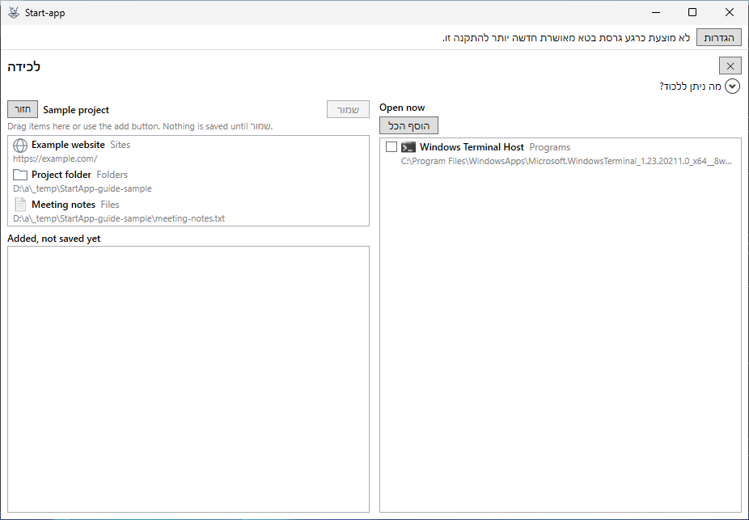

guía de usuario
guía Start-app
Paso a paso en la versión 0.1.0-proto.2: crear un espacio de trabajo, agregar elementos, captura, lanzamiento y guardado - con capturas de pantalla reales de la aplicación y las limitaciones que conviene conocer.
Un prototipo de evaluación, no una versión estable
Versión de la guía: 0.1.0-proto.2
No se encontraron episodios. Pruebe con otra palabra o borre la búsqueda.
¿qué es? Start-app
Start-app Guarda programas, carpetas, archivos y enlaces bajo un nombre de entorno. La próxima vez que abras la computadora, el comando "Ejecutar" abre todos los elementos juntos, sin seleccionar cada uno nuevamente.
Esta guía describe la versión 0.1.0-proto.2 y recorre todo el flujo: la pantalla principal, la creación de un espacio de trabajo, agregar elementos manualmente o por captura, edición, lanzamiento y guardado. Capítulo Limitaciones conocidas Centraliza en un solo lugar todo lo que no hace la aplicación.
Requisitos del sistema y de instalación.
El destino del paquete es Windows x64. No existe una versión verificada para Mac o Linux.
La descarga de la versión que describe esta guía, 0.1.0-proto.2, esta en la lista de versiónes de la página principal, con el número de versión, el tamaño del archivo y su sha256 para verificar antes de la instalación. La descarga se realiza solo allí, no desde la página de la guía.
Activación después de la descarga
La descarga es un archivo ZIP, no un instalador. Después de descargar:
- Extraiga todos los archivos del ZIP a una carpeta.
- Ejecuta
Start-app.exeen la carpeta principal. - Manten la carpeta
Appjunto al archivo, y mueve siempre toda la carpeta junta.
La aplicación incluye su entorno de ejecución, por lo que no es necesario instalar .NET por separado. Sin registro, cuenta o inicio de sesión. Los datos se guardan en un archivo local en%LOCALAPPDATA%\StartApp\store.json.
Qué se probó: este prototipo se creó como una aplicación Windows x64 independiente y se inició y cerró con éxito en un servidor Windows Server 2025 alojado. No se ha probado de forma independiente en Windows 11 doméstico y no existe un compromiso de versión mínima de Windows. No hay garantía de que no aparezcan advertencias de seguridad o alertas de software antivirus.
Actualizacion de versión
La comprobación de actualizaciónes se hace desde la pantalla de configuración de la aplicación, y alli solo se ofrecen versiónes aprobadas. La descarga es desde el sitio oficial y la instalación es manual: no hay actualización automática.

La pantalla principal: la vista del entorno.
En la parte superior de la pantalla se encuentra la lista de entornos. Cada tarjeta muestra el nombre, la descripción, la categoría, el color y la imagen elegidos, la fecha de creación y la última apertura. La fecha de última apertura se actualiza al iniciar un entorno, no al abrir un elemento individual.
Cada tarjeta tiene un botón "Lanzar" adyacente. Un clic derecho en la tarjeta, o Shift+F10 en el teclado, abre un menú de acciones: Mostrar, Lanzar, Agregar elemento, Diseñar tarjeta y Editar categoría. Debajo de la lista hay un formulario para crear un nuevo espacio de trabajo, y en la esquina una entrada a la pantalla de captura.


Creando un nuevo ambiente de trabajo
En el formulario de creación, el nombre es un campo obligatorio. La categoría predeterminada es "General", y puedes elegir un color y una imagen de tarjeta. La descripción es opcional.
Agregar elementos manualmente
En la pantalla de detalles del entorno, agregue elementos de cuatro tipos: sitio, archivo, carpeta y software. A cada artículo se le puede dar su propio nombre y descripción. Las rutas locales requieren una ruta completa de Windows, no un alias corto de software.
Los elementos se agrupan en pantalla por tipo: sitios, carpetas, archivos y programas. Cada fila tiene un botón "Editar" adyacente.

El botón "Elegir espacios existentes" agrega al espacio de trabajo un elemento ya guardado en otro espacio: elige un tipo, busca y seleccióna.

Captura: escaneo, selección y duplicación
La captura escanea lo que está abierto ahora: programas y Explorador de archivos de Windows, y en el navegador la barra de direcciones. La fuente del navegador conoce Chrome, Edge y Brave; Actualmente no existe una matriz de compatibilidad completa para cada navegador y versión. El escaneo puede tardar hasta 10 segundos.
Al crear un nuevo espacio de trabajo desde una captura, los elementos encontrados están marcados por defecto, y solo los marcados se agregan al espacio.

Al agregar a un espacio existente, las adiciones se muestran lado a lado frente a los elementos guardados, con la marca Added, not saved yet. Nada se guarda hasta que haces clic en Guardar.

No hay prevención completa de duplicados: el mismo elemento se puede agregar más de una vez, aunque ya esté guardado en el espacio. Conviene revisar la lista antes de guardar.
Editar entorno y elementos
El menú contextual de la tarjeta de espacio ofrece: Mostrar, Lanzar, Agregar elemento, Diseñar tarjeta y Editar categoría.
En el diseño de tarjeta eliges un color y una imagen de fondo.
Al hacer clic en "Editar" junto a un elemento se abre un editor en linea con nombre, descripción y dirección. "Cancelar" cierra el editor sin cambios.

Los cambios se guardan solo después de un guardado explícito; detalles en el capítulo Guardar y almacenamiento local.
Entorno de lanzamiento y pruebas antes de abrir.
El comando "Lanzar" abre primero la ventana de selección "Qué abrir en el espacio?": todos los elementos están marcados por defecto, y puedes desmarcar lo que no quieras abrir. "Cancelar" cierra la ventana sin abrir nada.

Si la comprobación identifica con certeza un elemento ya abierto, aparece una opción para volver a abrirlo: estos elementos están desmarcados por defecto. Marca solo lo que quieras abrir de nuevo; puedes volver a la selección o cancelar. Una detección incierta no prueba que el elemento esté cerrado. Los resultados distinguen una solicitud enviada, una omisión, un fallo y la elección de no volver a abrir. Una solicitud enviada no confirma que la ventana se haya abierto.
Los enlaces se abren solo por http/https, y los programas requieren una ruta completa.
Después de la confirmación, la aplicación envía a Windows una solicitud para abrir cada elemento. Es importante comprender lo que esto significa: una solicitud enviada no es prueba de que la ventana deseada realmente se haya abierto. La aplicación tampoco puede determinar de manera confiable si el elemento exacto ya está abierto, por lo que volver a abrirlo puede crear duplicados. Un elemento cuyo archivo no se encuentra falla con el mensaje "archivo no encontrado".
Limitaciones conocidas
- No existe una identificación automática del documento que se abre dentro del software; Un software abierto no es evidencia de que se haya abierto un archivo en particular. Los documentos se agregan manualmente.
- No hay garantía de recuperación del contenido no guardado o de la ubicación de la ventana.
- "ya abierto" no se conoce de manera confiable; La reapertura puede crear duplicados.
- Un resultado de captura parcial o una lista vacía no significa que no haya nada abierto.
- No hay prevención completa de duplicados entre elementos guardados y nuevos.
- No hay ninguna operación de eliminación del entorno en la interfaz; Puede eliminar elementos de un entorno, no eliminar un entorno completo.
- No hay actualización automática; la comprobación de versiónes aprobadas está disponible en la pantalla de configuración, y la instalación es manual desde el sitio oficial.
Guardar y almacenamiento local
En el diseño actual del proyecto, los espacios de trabajo se guardan en un archivo local en la computadora: %LOCALAPPDATA%\StartApp\store.json. Los cambios se guardan solo cuando haces clic explícitamente en Guardar.
Privacidad en pocas palabras
En el diseño actual, los datos de los entornos se guardan localmente en el ordenador. Abrir un enlace o software crea la comunicación habitual de ese destino; por ejemplo, abrir un sitio web en un navegador conduce a ese sitio web.
Este sitio en sí no incluye formularios, análisis, fuentes remotas ni servicios de terceros.
preguntas frecuentes
qué Start-app ¿haciendo?
Guarda programas, carpetas, archivos y enlaces bajo un nombre de entorno y los abre todos junto con el comando "Ejecutar".
¿Todo lo abierto volverá exactamente como estaba?
No garantizado. No hay captura automática de documentos que están abiertos dentro de los programas, recuperación de contenido no guardado ni promesa de colocación de ventanas. La apertura es una solicitud al sistema operativo, con comprobaciones e informes preliminares.
¿Cómo se agrega un documento que está abierto en un software?
Manualmente: agregue el archivo como un elemento de tipo de archivo en los detalles del entorno. La captura no la reconoce por sí sola del software abierto.
¿Dónde se almacena la información?
en un archivo local en la computadora. Detalles en el capitulo Guardar y almacenamiento local.